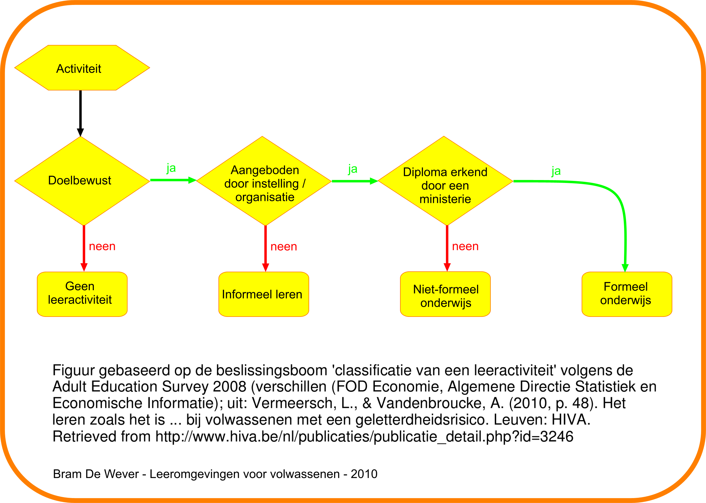

- Van Petegem, P., & Imbrecht, I. (2012). Organisatie Volwassenenonderwijs.
- Boeren, E., & Nicaise, I. (2009). Wie neemt deel en waarom?
- Knowles (2005). An andragogical process model for learning. (H6 Knowles)
- Knowles (2005). Andragogy in practice. (H7 Knowles)
- Jarvis, P. (2010). Perspectives on learning theory. (H5 Jarvis)
- Jarvis, P. (2010). Theoretical perspectives on teaching. (H9 Jarvis)
- Jarvis, P. (2010). Distance education and open learning. (H10 Jarvis)
- Jarvis, P. (2010). Assessing and evaluating. (H11 Jarvis)
- Nicaise, I. (2003). Levenslang leren herverdelen. (H1 LLL 2002)
- Baert, H. (2003). Een nabeschouwing. (Slothoofdstuk LLL 2002)
Planning lessen
- Lessen op vrijdagvoormiddag
- 08 mrt: sessie 1
- 15 mrt: sessie 1
- 22 mrt: sessie 1
- 29 mrt: sessie 1
- 19 apr: Les 6
- 26 apr: Les 6
- Certificaat of diploma
- Mogelijkheid tot inschrijven cursus van een volgend niveau
- Voorbeeld: tweedekansonderwijs
Planning lessen (vrijdagvoormiddag)
- 17 feb: Les 1
- 14 feb: Les 2
- 03 mrt: Les 3
- 10 mrt: Les 4
- 17 mrt: geen les
- 24 mrt: geen les
- 31 mrt: Les 5
|
- 07 apr: geen les
- 14 apr: geen les
- 21 apr: Les 6
- 28 apr: Les 7
- 05 mei: Les 8
- 12 mei: Les 9
- 19 mei: Les 10*
|
Indienen portfolio
- Deadline: 19 mei
- Portfolio zowel digitaal als op papier indienen (rekening mee houden)
Opdracht: presentatie paper
- Per duo
- 1 wetenschappelijk artikel (hoofdstuk boek, ev. tijdschriftartikel)
- Presentatie van 10 minuten
- Elk 5 minuten
- Context + inhoud (kernachtig) + link met LVV; wat leren we hieruit?
Opdracht: presentatie paper
- Aangeraden boeken waaruit hoofdstuk kan worden gekozen (zie bronnen documenten Minverva)
- Rubenson (2011)
- Galbraith (2004)
- Jarvis (2010)
- VLOR (2014)
- Losse artikels
Beslissingsboom terminologie Adult Education Survey 2008
